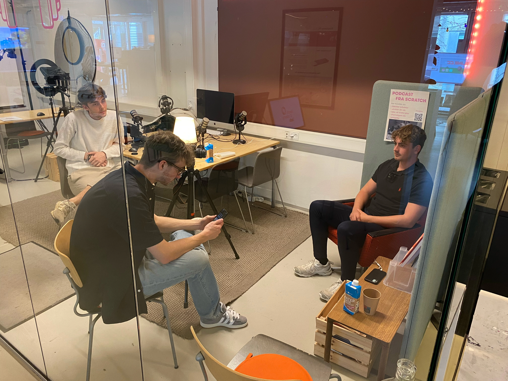
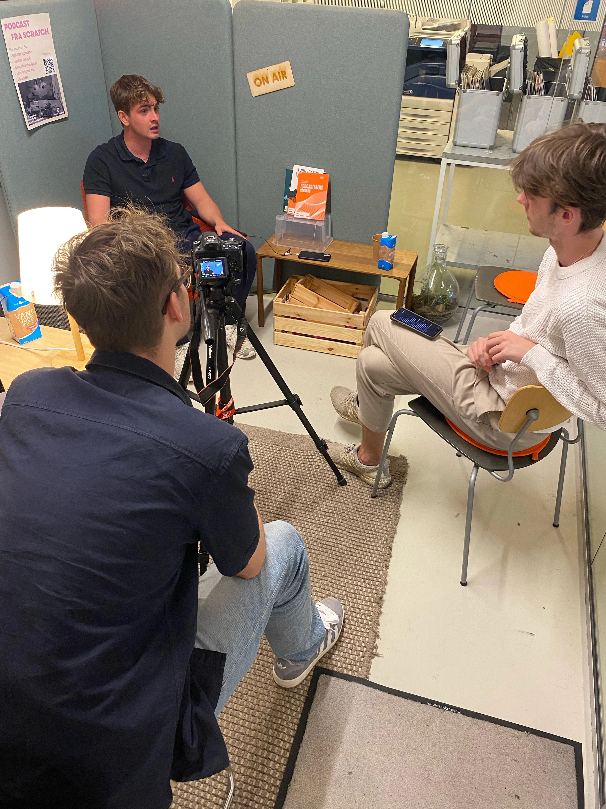
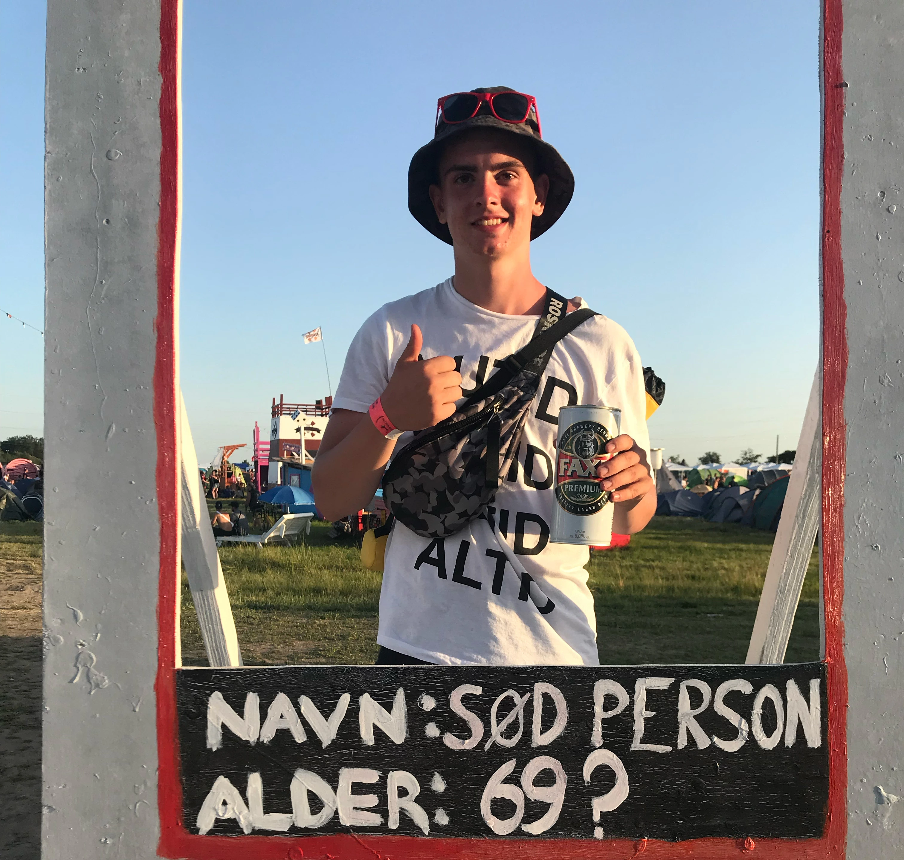

Processen
Vi havde i forvejen skrevet en masse spørgsmål til Mads om livet som rejseguide, med fokus på hans passion. og så sad vi egenligt bare og talte med ham imens vi filmede det. Alexander stod for at stille spørgsmål, Noel kig og filmede samt tog billede undervejs, og jeg holdte øje med kameraret samt lyd, og hjalp til med spørgsmålene, altså hvis der var et spørgsmål der var godt men svaret kunne godt bruge lidt uddybning var hvor jeg greb mest ind.


Mads Schriener Pedersen
Mads er 20 år gammel, og har været rejseguide de sidste 2 år. han har en passion for at rejse og møde nye personer, få personlig erfaring, og udforske verden